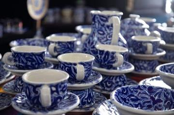
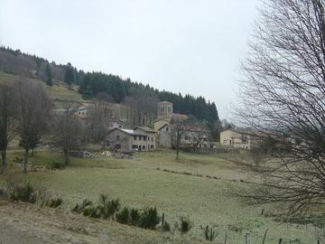
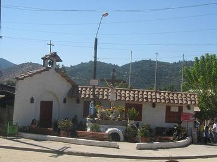
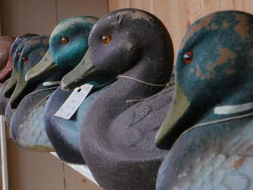
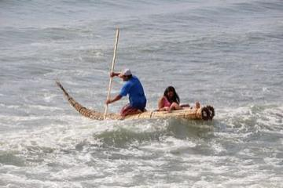
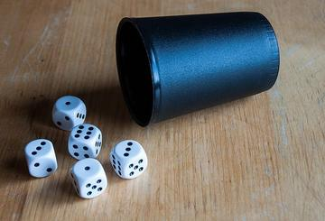
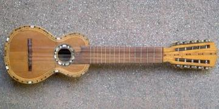
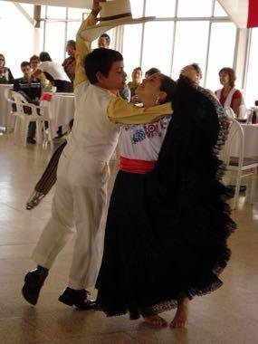

Home / Living Traditions / The Americas: Andes and South America
Playable heritage gameChulucanas pottery
Also known as Chulucanas
In Chulucanas, in northern Peru, potters shape slim-necked vases and decorate them by resist: leaves and a protective coating keep parts of the clay pale while the firing in sawdust darkens the rest. Each leaf is printed in negative. Here you shape a vase and choose the colour of each band.

How to play
- Look at the lit vase on its mat: it shows the shape and the colour of each band.
- Drag across the turning clay to set how wide each row is.
- Press Glaze, then tap a band and a colour: smoke black, cream resist or burnt sienna.
- Press Check to see your stars, or Watch and learn to see a round played for you.
Rules at a glance
- Shape counts for 70 percent of the score: the closer each of the 12 rows is to the width of the lit target, the better.
- Finish counts for 30 percent: a band scores when it carries the same swatch as the target.
- The leaf prints are part of the picture; the colour of the band decides what the leaf shows against.
- Undo takes back one stroke; Reshape goes back to the clay; Reset starts the shape again.
- Three stars for 88 or more, two stars for 65 and one star for 40.
About the tradition
Chulucanas is a town in the dry forest of the Piura region in northern Peru. Its potters shape and polish the ware, apply a resist with leaves, and fire it in kilns with sawdust, so the covered parts stay pale and the rest turns dark.
Origins
A living tradition passed from person to person; it is not tied to a single dated origin. It belongs to the cultural world of The Americas: Andes and South America.
Credits
- Photo: Pitxiquin, CC BY-SA 4.0, source on Wikimedia Commons
- Text: CC BY-SA 4.0, World Heritage Games.
Sources

Get the app
Chulucanas pottery is coming to the App Store and Google Play. One app, many traditions, no account needed.
Included in Clay & Kiln of the World
More games to play




More from Peru

Caballito de totora
Peru · Crafts and making


Marinera Norteña
Peru · Dances